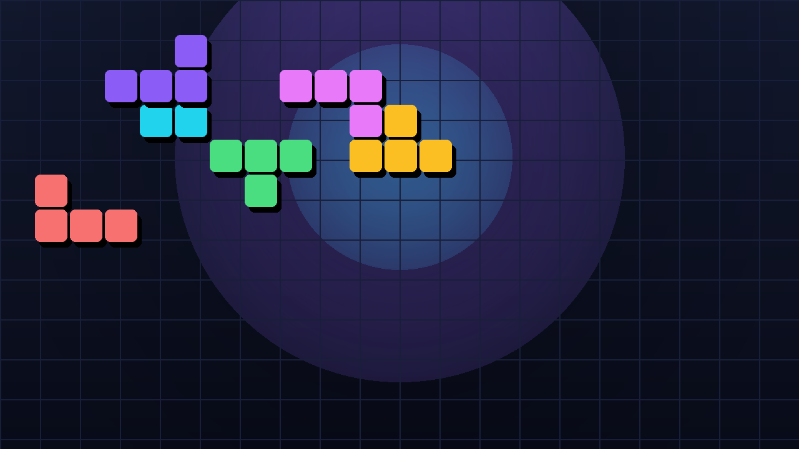

← все игры

T-Blocks
Тетрис-++: боссы толкают поле вверх, 8 павер-аппов, 12 достижений, 4 темы и живой лидерборд на FastAPI. Вся игра — один HTML-файл.
Режимы
- Классический — комбо и бонусы, стандартные правила.
- Марафон — бесконечный, скорость растёт с уровнем.
- Битва с Боссом — линии наносят урон, босс отвечает мусорными рядами.
- Ультра — две минуты на максимум очков.
Боссы
Каждый босс периодически проталкивает поле вверх, добавляя мусорный ряд снизу:
Кубик Хаоса 325 HP атака каждые 260 тиков +1 ряд Призма Тьмы 520 HP атака каждые 180 тиков +2 ряда Тетроментор 780 HP атака каждые 130 тиков +3 ряда
Управление
| Действие | Клавиши |
|---|---|
| Движение | ← → |
| Мягкое / жёсткое падение | ↓ / Space |
| Вращение | ↑ / X |
| Пауза | P / Esc |
Техническая часть
- Один HTML-файл на ~1400 строк, ноль зависимостей — открывается в браузере как есть.
- Лидерборд и статистика —
FastAPI+ SQLite, версии в одном месте. - Процедурный звук через
Web Audio: ни одного аудиофайла. - PWA-манифест и service worker — игра ставится на рабочий стол и работает офлайн.
- 12 достижений и 4 темы оформления: Matrix, Neon, Retro, Mono.
Подробнее в блоге: T-Blocks 4.0: тетрис, который дорос до боссов